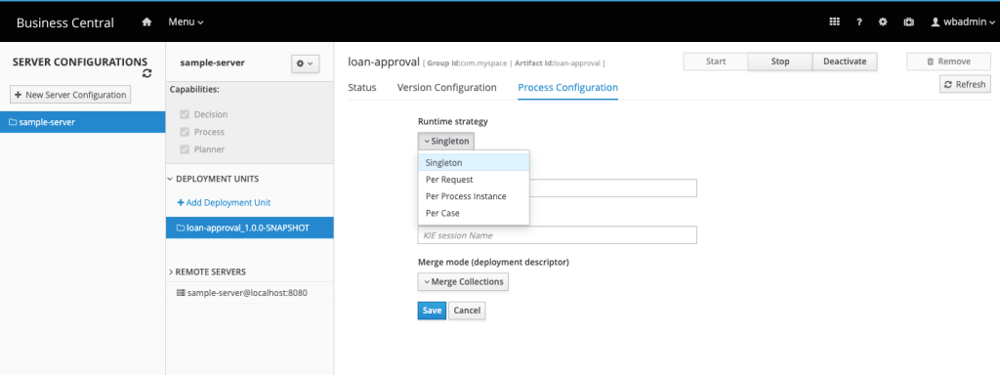
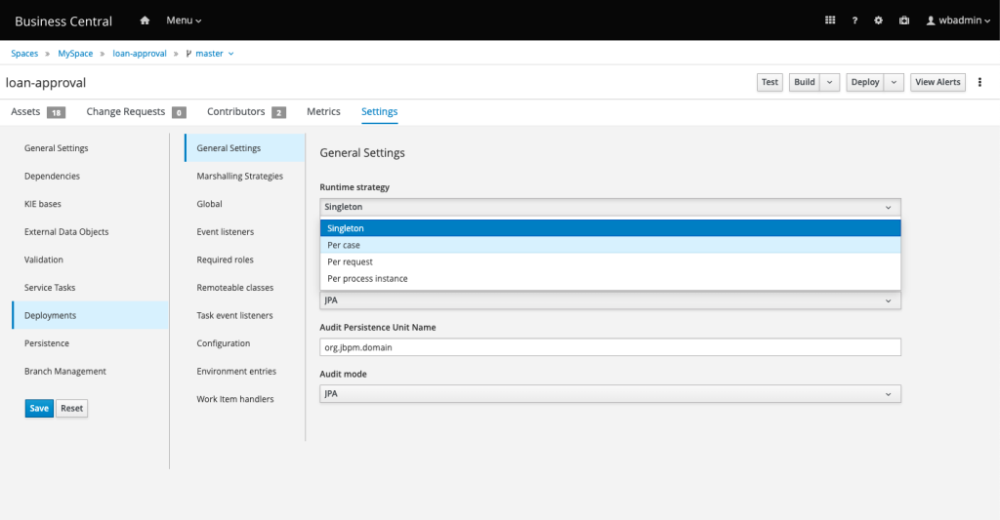

Runtime Strategy: Choose wisely
Kie Server can be configured to deal differently with the requests it receives and the objects it stores in memory or in the database. Properly configuring how the engine deals with the objects in memory, ensures a project with fewer resource consumption and avoids unexpected behaviors.
Runtime Strategy configuration affects directly how the engine deals with the lifecycle of the Kie Sessions and objects loaded in memory.
You have to choose between four options, for each new project deployment you create:
- Singleton Runtime Strategy
- Per Process Runtime Strategy
- Per Request Runtime Strategy
- Per Case
Choosing a strategy
Understand the key concepts of each strategy to guide your decision of when you should use each of them:
Singleton Runtime Strategy: If you create and deploy a project, this runtime strategy configuration is used. It’s the default configuration. This strategy uses a single Kie Session. This makes things easier for beginners since every inserted object is available in the same Kie Session. Also, jBPM persists the Kie Session, and it is reused if the server restarts.
Rule execution within processes can be impacted. Consider that: if process instance A inserts person John to be evaluated by business rules. Process instance B, inserts Maria. Later, when process C fires rules for its own person, John and Maria will still be in memory and will be evaluated by process C rules improperly!
When using this configuration, process execution happens within a synchronized Runtime Engine: it is thread-safe. Consequently, this characteristic can affect and bring consequences on performance. If you expect a high workload, or if the project use timers or signals in the process definitions, you may want to consider a different strategy for your production environment.
Per Request Strategy: defines a stateless behavior. The engine will create one Kie Session per request and destroy it at the end. The Kie Session will not be persisted. This is a good choice for high workload environments.
The following situation can occur: Consider two requests executed simultaneously to interact with the same process instance. One of the two requests might lock a database row to update it, and the other request might try to update it as well. This will lead to an OptimisticLockException.
This strategy might do the implementation more challenging if your project uses timers events or if the process involves business rule tasks.
Per Process Instance Strategy: recommended when your process uses timers and businessrule tasks. The Kie Session is created when the process instance starts, and it dies, when the process instance ends. This is usually adequate for most use cases.
Keep in mind: creating Kie Bases is an expensive operation. Creating new Kie Sessions is cheap.
The engine stores the Kie Session in the database, and always use the same Kie Session for the same process instances.
Per Case: this strategy should be used if you are using a Case Management project. If you create a new “Case Project”, this strategy is selected by default. The Kie Session will last while the case is still opened (active).
Now, let’s check the possible places to configure Runtime Strategies, and when should each one be used.
Choosing where to configure the strategy
Container Level: Affects the deployed kjar. Configuration can be made in kie containers using Business Central via the Execution Servers page.

Project level: The configuration will affect only this project. Configuration can be done via Business Central in the XML file or via. Inside the file src/main/resources/META-INF/kie-deployment-descriptor.xml the following configuration is present: SINGLETON

Server level: No UI Available. A new system property needs to be configured pointing to the new file.
This change will impact all projects from this server. A new deployment-descriptor.xml needs to be provided with all the tags and components (not only the ones which you want to customize). The system property is org.kie.deployment.desc.location and its value must point to a valid accessible file: “file:/path/to/file/deployment-descriptor.xml“
[INFO] If using the server level configuration, make sure to provide a valid XML file. See more details about the configuration in the official documentation, topic “Default deployment descriptor”
https://docs.jboss.org/jbpm/release/latest/jbpm-docs/html_single/#_deployment_descriptors
Finally, considering that we can configure the runtime strategy in three different places, this is how the precedence works by default: Container configuration overrides KJar and Server configs. KJar configuration overrides Server configs.
This blog post is part of the fifth section of the jBPM Getting started series:
Techniques to boost a BA Project